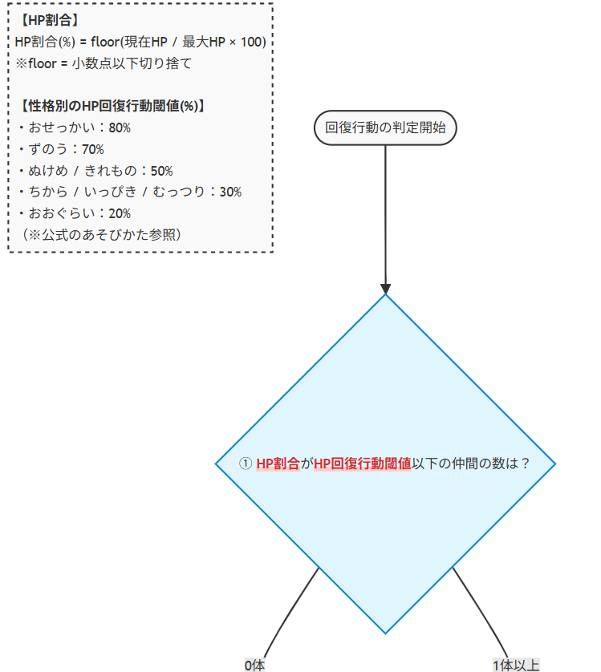
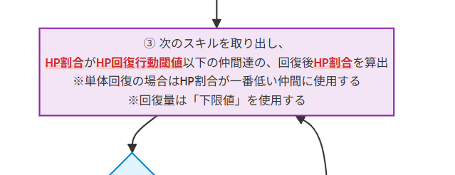
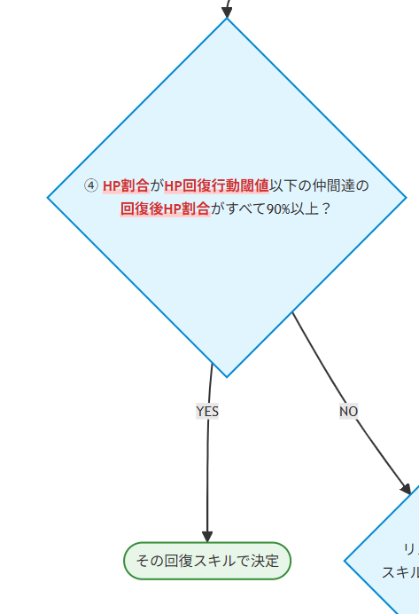
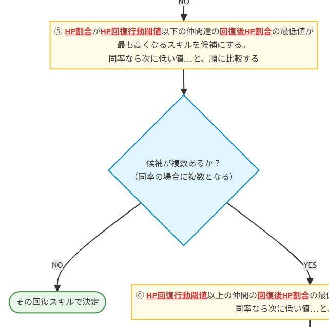
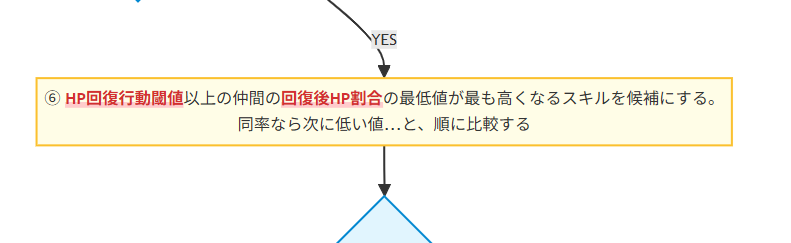

※ 文章の肉付けはAIに任せたので、ところどころで誇張表現が少しありますが、データは筆者がしっかりと検証して分析したものなので、結構正しいと思います（100％正しい保証はもちろんありません。反例が見つかったらぜひ教えてください！）
（なお、AIによる誇張が激しい部分は筆者がこっそり取り消し線や太字にて修正・追記しておりますｗ)
【重要】本項を読んで理解しても、1ミリも強くなれません（笑）
次のGPで今より良い成績を残したいと本気で思っている人は労力に見合わないので、スルー推奨です
なかまモンスターのグランプリや対戦において、「なぜそこで全体回復を撃ってくれないのか！」「そこで単体回復は無駄打ちだろ！」とAIの挙動に泣かされた経験は誰にでもあるはずです。
本記事では、検証に検証を重ねてついに解明された「回復行動のAIロジック」を公開します。
これを理解すれば、これまで運だと思われていた行動をある程度コントロールし、安定した勝率を叩き出すことが可能になります。可能になりません。ただししっかり理解すればGP中のモヤモヤは減らせるかも。
まずは結論から。モンスターがどの回復スキルを使用するか（あるいは使用しないか）は、以下のフローチャートに従って決定されています。（画面拡大して見てください・・・。）
たぶん元々ある程度仕組みを知ってる人は図を見るだけで理解できると思います！！（理解できた方は以下は読み飛ばしてもらってOKです！お疲れさまでした！）
は？意味わからんぞ？？という人のために図の中の重要なステップを解説します!!





このロジックが判明したことで、性格ごとの「隠れた有意差」と「回復量調整の重要性」が浮き彫りになりました。
これまで性格の違いは単に回復行動をするかどうかだけに影響していると思われていましたが、実は全体回復するか単体回復するかどうかにまで影響が出てくることがわかりました
は？そんなことある？？と思いますよね。解説します。
ピンチだと判定される対象は「60%」の1体のみです。
結果、79%で削られている仲間は放置されます。
ピンチだと判定される対象は「60%」と「79%」の2体になります。
AIの挙動を理解すれば、あなたのヒーラーはもっと輝きます。ナナレーターでこの数値を再現して、最強の構成を見つけ出しましょう！(まだ回復ロジック変更してないけどな！)
🔙 トップページに戻る